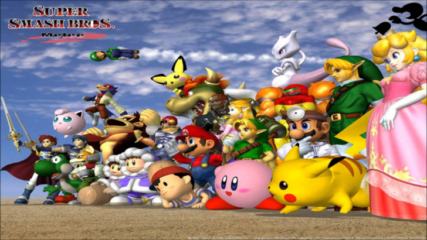

Les Personnages de SSBM
Bienvenue sur SSBM Characters, vous trouverez ici l'information essentielle sur les personnages de Super Smash Bros. Melee (SSBM). SSBM est un jeu video publié par Nintendo en 2001 pour la console Nintendo gamecube. Consideré par plusieurs comme le jeu competitif le plus complexe et difficile a maitriser, SSBM continue d'évoluer et de grandir meme aujourd'hui, 20 apres sa sortie.

il existe 26 personnages dans SSBM mais sur ce site, vous trouverez seulement l'information sur les "top tiers", c'est a dire les meilleurs 7 personnages de SSBM.